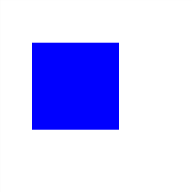
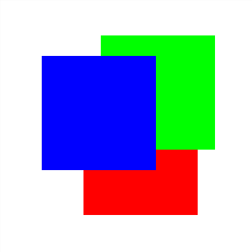

In this example, we illustrate how to stack objects in a custom manner and how to deal with layers.
We have three objects of interest in it -- white background, red rectangle, green rectangle and blue rectangle.
Like in other Evas examples, one interacts with it by means of key commands:
At any given point, like seem above, you'll be operating one rectangle only. You may stacking it below an adjacent object with "b":
"a" will do the opposite:
To bring it directly to the top/bottom, use "t"/"m", respectively:
At any time, use the "s" command to see the status of the ordering. It will show the background's ordering too. Note that it also shows the
layer for this object. It starts at a
different layer than the others. Use "l" to change its layer (higher layer numbers mean higher layers). If the background is on the same layer as the others (0), you'll see it interact with them on the ordering. If it's in the layer above, no matter what you do, you'll see nothing but the white rectangle: it covers the other layers. For the initial layer (-1), it will never mess nor occlude the others.
Let's make some tests with those commands. The rectangle which starts selected and which will receive our commands is the red one. It starts stacked above all the others, like seem above:
Stack it one level below, with 'b', and you'll get:
Note how the rectangle which laid above it, the green one, is now on top of it. Now change the rectangle to operate on to the blue one, with two consecutive 'c' commands. Note that it's the lowest one on the stack of rectangles. Issue the 'a' command for it, thus re-stacking it one level above:
You can send it to the top of its layer directly with the 't' command:
Now put it back to the bottom of that layer with 'm':
Like said above, we have two layers used at the beginning of the example: the default one (0) and the one immediately below it (-1), for the white background. Let's change this setup by issuing the 'l' command, which will change the background's layer to 1, i.e., a layer
above the one holding the other rectangles:
See how it now covers everything else. Press 'l' again, taking it now to layer 0. It's still covering everything because it lands the layer as the highest one on the objects stack. As we have the blue rectangle as the one receiving stacking commands, hit 't' and you'll see it again:

By bringing the background back to layer -1 ('l'), you'll get:

The last two commands available are "p" and "r", which will make the target rectangle to pass (ignore) and repeat the mouse events occurring on it (the commands will cycle through on and off states). This is demonstrated with the following EVAS_CALLBACK_MOUSE_DOWN callback, registered on each of the colored rectangles:
Try to change these properties on the three rectangles while experimenting with mouse clicks on their intersection region.
The full example follows.